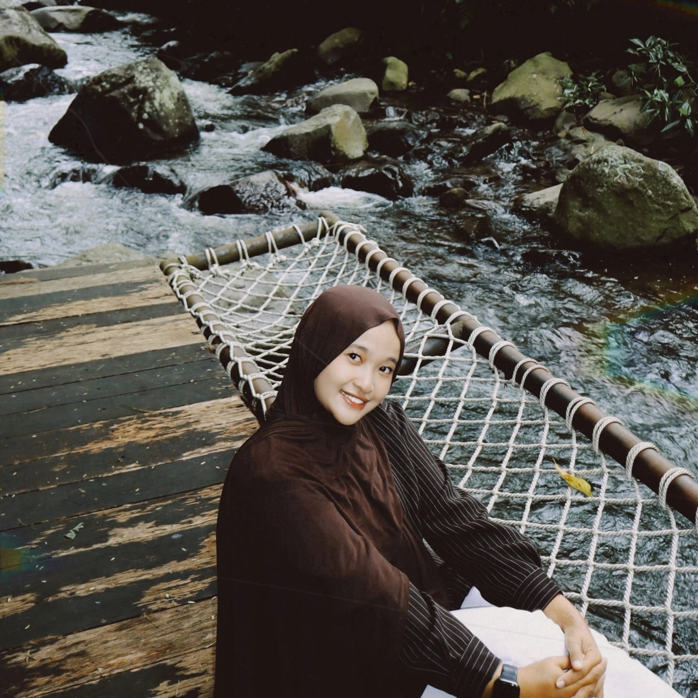
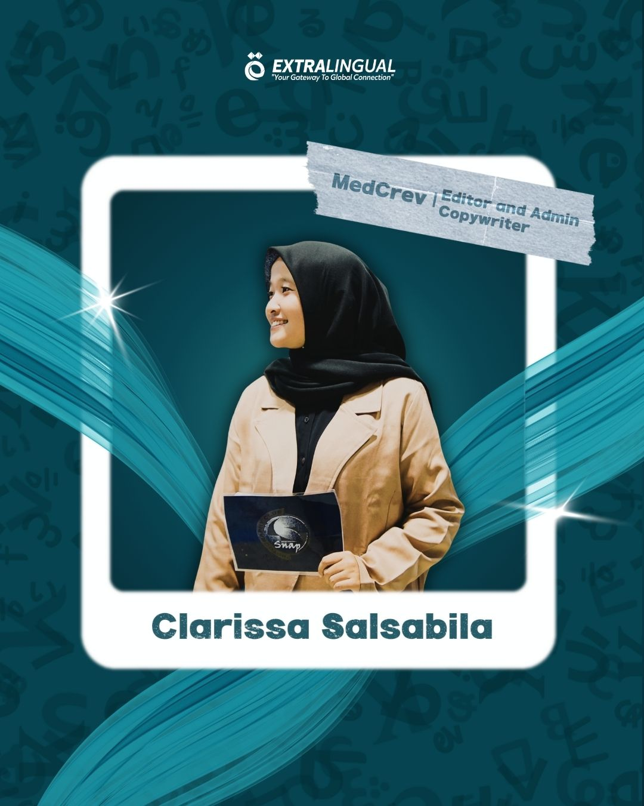
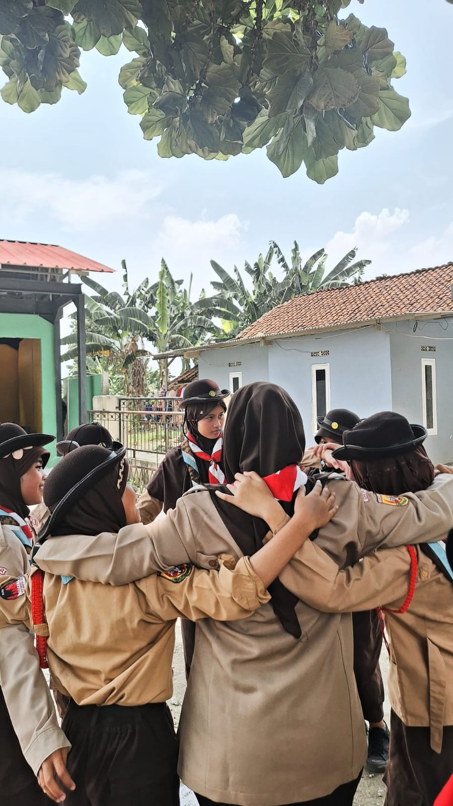
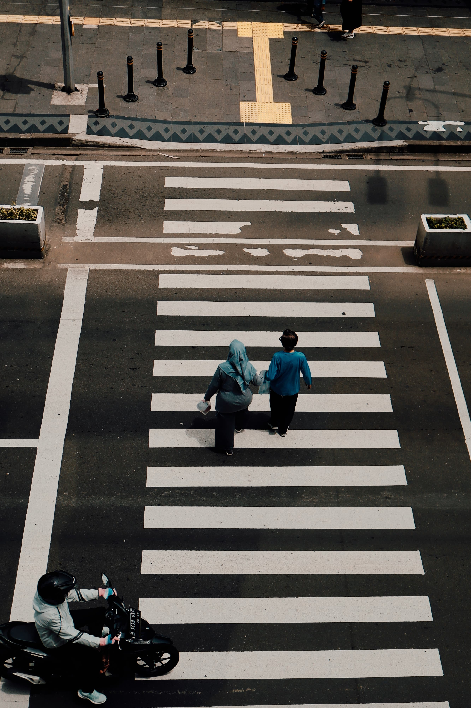
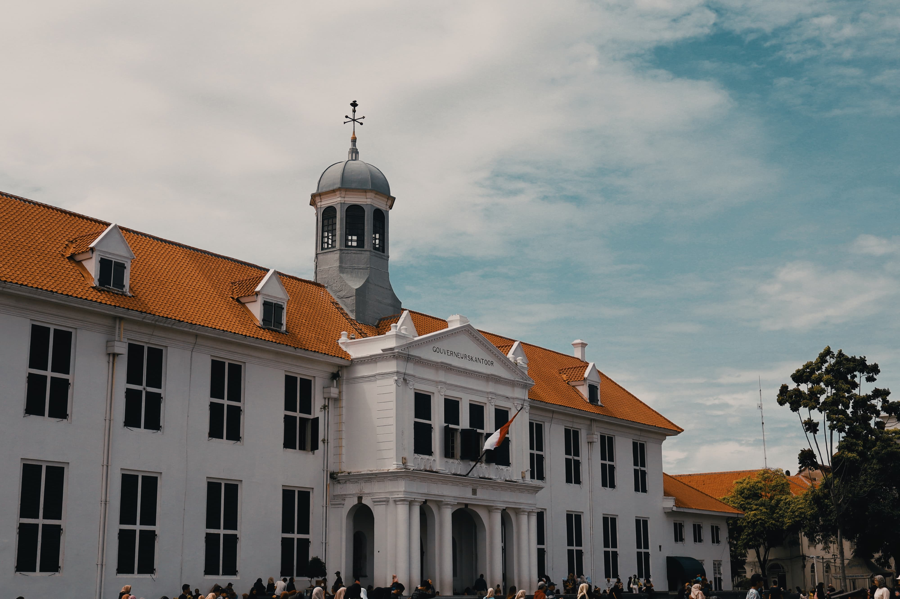
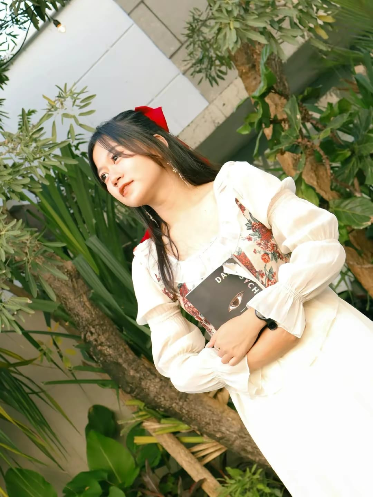
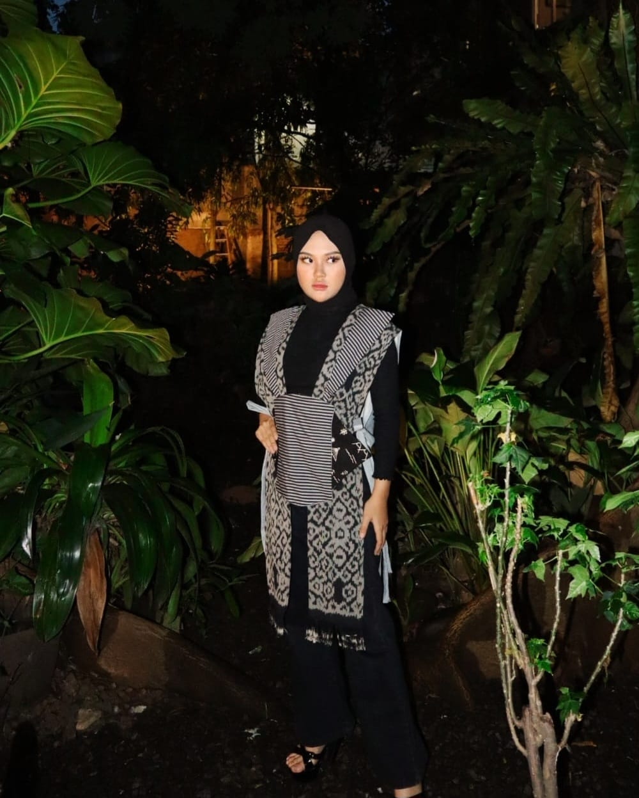
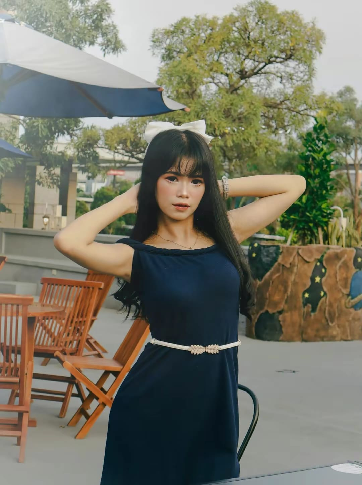
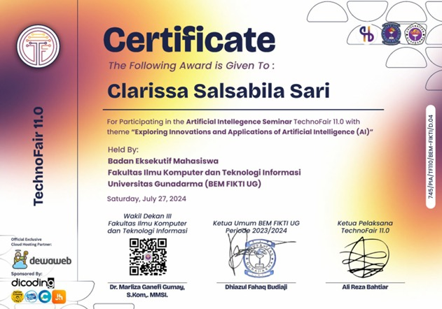
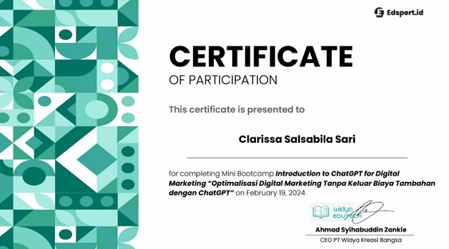

Clarissa Salsabila Sari

Hi! I'm Clarissa Salsabila Sari, 21 years old, born on 6th July 2004 in Depok. I find great joy in Photography —a medium for capturing moments, light, and hidden narratives.
My other passion is urban exploration, I love the quiet satisfaction of strolling through cities, discovering new streets, and finding those secluded spots that hold a unique, memorable vibe.
📝 Biodata
Name: Clarissa Salsabila Sari NPM: 10123275 Date of Birth: 6th July 2004 Address: Perum. Taman duta - Cisalak No. Handphone: 082210566156
🎓 Educational Journey
- 2011 - 2016: SDIT Pondok Duta
- 2017 - 2022: Gontor Boarding School
- 2023 - Now: Gunadarma University (Information System)
💼 Life & Experience
My days are defined by a dynamic blend of academics and leadership:
- Student Life: I am a university student, currently pursuing my degree in Information System. My studies keep me intellectually engaged and focused on future career goals in technology.
- Work Experience: Outside of my studies, I serve as a Scout Leader, actively involved in youth development. This valuable role allows me to teach essential life skills and nurture the next generation of leaders. I also serve as an admin and copywriter for the extralingual community and the Porsija football club.I have also moderated photography seminars.
Gallery of My Experiences



📷 Photography & Portfolio
Photography Skills
- Highly motivated Aspiring Photographer with a strong technical foundation and an unwavering focus on human-centric visual storytelling. Actively building expertise in Model Direction and agile Street Photography. Proficient in Manual Mode operation and editoring. Seeking an intensive learning environment to transition core photographic skills into professional execution.
My Project Street Photography


My Project Model Photography



Training Certificates


